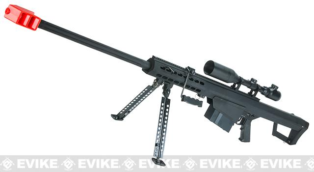
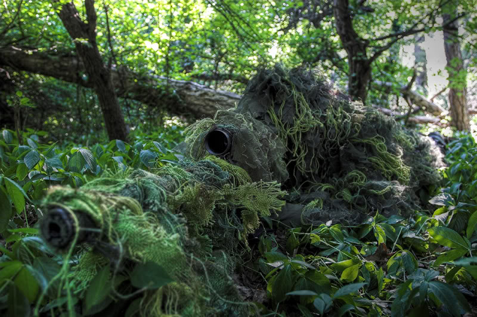
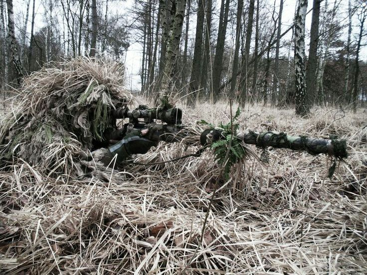

Yang terakhir adalah tipe Sniper Rifle, tipe ini digunakan untuk range yang jauh, mengingat powernya yang paling besar dan bisa mencapai jarak yang jauh dengan akurat.
pemakai tipe ini biasanya bersembunyi di tempat yang tidak terduga, seperti di dalam semak2, di atas pohon, di atas menara, dan yang lainnya tergantung tempat bermain.
biasanya player melengkapi dirinya dengan Ghillie Suit untuk berkamuflase sehingga tidak ketahuan posisinya, dan terkadang seorang sniper ditemani oleh Spotter yang bertugas untuk menentukan jarak dan arah angin.

1 | 2 | 3